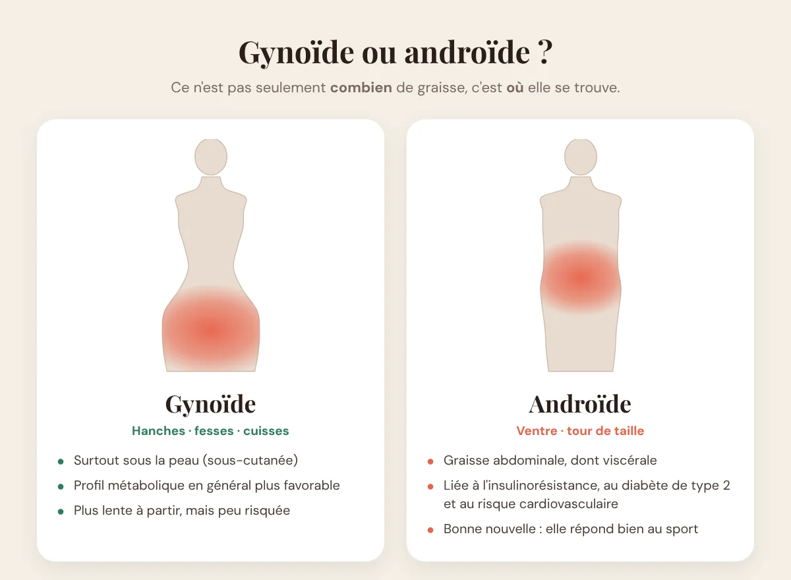
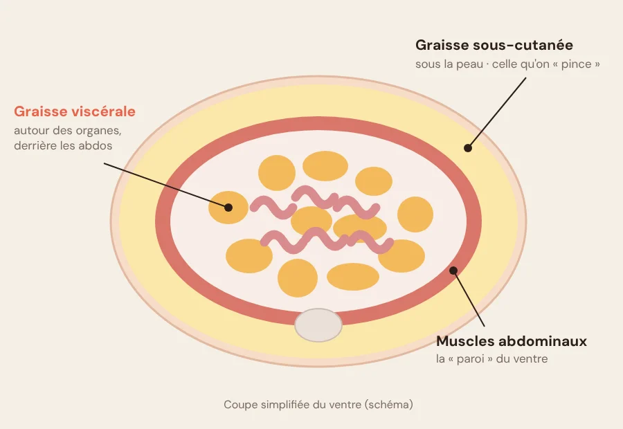
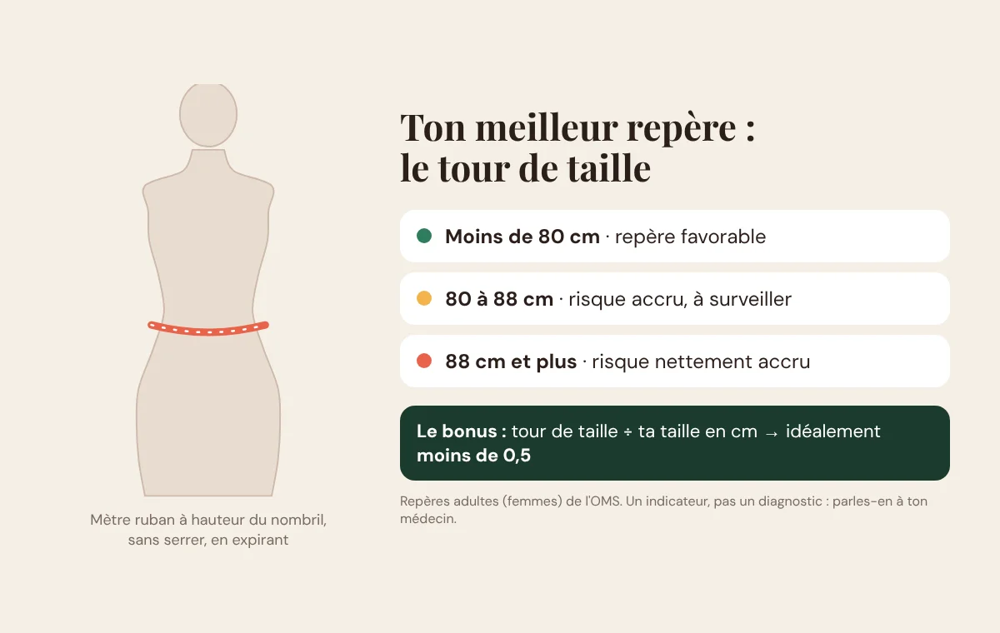

Deux femmes peuvent faire le même poids, la même taille de jean… et ne pas avoir du tout le même corps. L'une garde tout sur les hanches et les cuisses, l'autre voit son ventre s'arrondir alors que ses jambes restent fines. Ce n'est pas un hasard, et ce n'est pas qu'une question d'esthétique.
L'endroit où ton corps stocke la graisse en dit long sur ton profil, sur tes hormones… et sur la stratégie qui va vraiment marcher pour toi. Voilà tout ce qu'il faut savoir, sans jargon.
⚡ En bref : la graisse des hanches et des cuisses (profil « poire ») est surtout sous la peau et peu risquée. La graisse du ventre (profil « pomme ») contient davantage de graisse viscérale, liée au diabète de type 2 et aux maladies cardiovasculaires. La bonne nouvelle : c'est aussi celle qui répond le mieux au sport.
Gynoïde ou androïde : de quoi on parle ?
Ces deux mots savants décrivent simplement où se répartit la graisse :
- Profil gynoïde, ou « poire » : le stockage se fait surtout sur les hanches, les fesses et les cuisses. C'est le profil le plus fréquent chez les femmes avant la ménopause, sous l'effet des œstrogènes.
- Profil androïde, ou « pomme » : le stockage se concentre sur le ventre et le haut du corps. Il est plus fréquent chez les hommes, et chez les femmes il devient plus courant avec l'âge.

Beaucoup de femmes sont un mélange des deux, avec une dominante. Si tu veux aller plus loin sur ta silhouette, j'ai aussi écrit un guide sur les 5 morphologies féminines.
Le vrai sujet : graisse sous la peau ou graisse autour des organes
Toutes les graisses ne se valent pas. Il en existe deux grands types :
- La graisse sous-cutanée se trouve juste sous la peau. C'est celle que tu peux « pincer ». Sur les hanches et les cuisses, elle est majoritaire, et elle est associée à un profil métabolique plutôt favorable.
- La graisse viscérale se loge en profondeur, derrière les abdominaux, autour des organes (foie, intestins). Elle ne se voit pas directement, mais elle est très active : elle est associée à l'insulinorésistance, au diabète de type 2, à l'inflammation chronique et au risque cardiovasculaire.

C'est pour ça qu'on dit qu'il ne compte pas seulement combien de graisse tu as, mais où elle se trouve. Un ventre qui s'arrondit mérite plus d'attention que des cuisses un peu plus rondes.
💡 À savoir : la graisse des cuisses n'est pas « dangereuse », elle est juste tenace. Si tu as un profil poire, ce n'est pas un problème de santé, c'est surtout une question de patience et de bonne méthode. Pour la culotte de cheval, lis ce qui marche vraiment contre la cellulite.
Pourquoi le ventre prend le relais avec l'âge
Beaucoup de mes clientes me disent : « avant, je prenais sur les cuisses, maintenant tout va sur le ventre ». Elles ont raison, et il y a des explications :
- La ménopause : la baisse des œstrogènes favorise une redistribution de la graisse vers l'abdomen. C'est pour ça que le ventre change souvent à partir de 45-50 ans, même sans prise de poids. J'en parle en détail dans mon guide sport et ménopause.
- La fonte musculaire : après 30 ans, on perd du muscle chaque année si on ne le travaille pas. Moins de muscle, c'est un corps qui dépense moins au quotidien.
- Le stress et le manque de sommeil : ils sont associés à un stockage plus marqué sur le ventre, et à plus d'envies de sucré. Les mamans aux nuits hachées connaissent bien.
Ton meilleur repère : le tour de taille (pas la balance)
Le tour de taille est l'indicateur le plus simple pour estimer la graisse abdominale. Il se mesure en 30 secondes avec un mètre ruban :
- debout, pieds légèrement écartés ;
- le ruban à hauteur du nombril (à mi-chemin entre la dernière côte et le haut de la hanche) ;
- sans serrer, en fin d'expiration, le ventre relâché (pas rentré !).

Les repères de l'OMS pour les femmes adultes : à partir de 80 cm, le risque métabolique augmente, et à partir de 88 cm, il est nettement accru. Autre repère pratique : ton tour de taille devrait idéalement rester inférieur à la moitié de ta taille (exemple : moins de 82 cm pour 1,64 m).
Ce sont des indicateurs, pas un diagnostic. Si tu es au-dessus, ce n'est pas une raison de paniquer, mais c'est une bonne raison d'agir… et d'en parler à ton médecin.
📏 Mon conseil de coach : mesure-toi une fois par mois, le matin, toujours dans les mêmes conditions. Avec mes clientes, c'est souvent le tour de taille qui bouge en premier, bien avant la balance.
Ce qui marche vraiment pour perdre du ventre
Mauvaise nouvelle d'abord : on ne peut pas choisir où on perd la graisse. 200 crunchs par jour ne font pas fondre le ventre, ils renforcent les abdos qui sont dessous. La bonne nouvelle : la graisse viscérale est l'une des premières à partir quand tu bouges plus et que tu manges mieux. Les 5 leviers qui font la différence :
1. La musculation, 2 à 3 fois par semaine
C'est le levier n°1 pour une femme. Le muscle augmente ta dépense au quotidien, améliore l'utilisation du sucre par ton corps et redessine la silhouette. Squats, fentes, hip thrust, pompes, tirages : des mouvements globaux, avec une charge qui progresse.
2. Bouger tous les jours (vraiment)
La marche, les escaliers, porter les courses : cette activité du quotidien pèse lourd dans ta dépense totale. Viser 7 000 à 10 000 pas par jour change souvent plus les choses qu'une séance de cardio en plus.
3. Le cardio, en complément
Les séances d'endurance (vélo, marche rapide, natation) et les fractionnés courts sont efficaces sur la graisse viscérale. Mais ils viennent en plus du renforcement, pas à la place.
4. Une assiette qui rassasie
Des protéines à chaque repas, des légumes, des féculents complets en quantité adaptée, et moins de produits ultra-transformés et d'alcool. Pas besoin de régime : un léger déficit, tenu dans la durée, fait le travail. Pour savoir combien manger, lis mon article sur les calories.
5. Le sommeil et le stress
Ce n'est pas du bonus. Mal dormir augmente la faim et les envies de sucré, et rend la récupération plus difficile. Protéger ton sommeil fait partie du programme.
Manger très peu : la fausse bonne idée
C'est le piège le plus fréquent que je vois chez mes nouvelles clientes : elles mangent très peu, s'entraînent dur… et ne voient rien bouger. Pourquoi ?
- Tu perds du muscle en même temps que la graisse, donc ta silhouette se ramollit au lieu de se raffermir.
- Ton corps s'économise : fatigue, moins d'énergie, tu bouges moins sans t'en rendre compte. Ta dépense baisse.
- Tu craques : les restrictions trop fortes finissent presque toujours par des fringales et des week-ends « open bar », qui effacent les efforts de la semaine.
Résultat : la balance stagne et le moral aussi. La solution n'est pas de manger encore moins, mais de manger suffisamment, surtout en protéines, pour soutenir tes séances, avec un déficit raisonnable. C'est exactement ce qu'on ajuste chaque mois avec le Boost Nutrition de mon coaching.
Les erreurs à éviter
- Se fier uniquement à la balance : prends ton tour de taille et des photos, c'est bien plus parlant.
- Faire des abdos pour « brûler » le ventre : utile pour le gainage, inutile pour la graisse.
- Ne faire que du cardio : sans muscle, le corps maigrit mais ne se raffermit pas.
- Les régimes express : tu perds vite, tu reprends plus vite encore.
- Abandonner au bout de 3 semaines : les vrais changements se voient sur 2 à 3 mois.